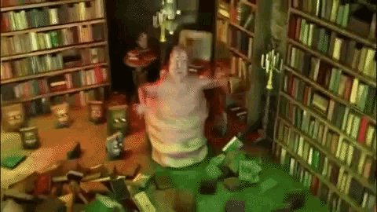

Penguin Slingshot

The Nazis developed this devastating weapon for the purposes of mass destruction. Luckily for the Allies, Hitler forgot about it and never used it.
Bambo

Bambo is a super soldier that was likley developed by Luxembourg.
The Nut Gun

The nut gun is a long, hard, queue that's what she said, gun that is the most effective way of taking out people with nut allergies.
Spongebob

Spongebob is a sponge turned sentient then genocidal. He doesn't care who he kills... but all he wants is a boating license.
Rambi

Rambi is yet another super soldier. Rambi's development most likley occered in Old Zealand, Luxembourg's rival. Luxembourg is in currently in a cold war with Old Zealand.
John

John was just a normal American citizen, until he met Garfield. His time with Garfield taught him about sharing... forced sharing. He dreams to "share things equally amongst (OMG AMONGST = SUS) the people." He doesn't about the people he crushes with his iron fist.
Marki Pliers

Marki Pliers are one of the strongest melee weapons ever made. It's said they have to power of the "Yotubes".
The Globglogabgalab
The Globglogabgalab is the stongest being in the universe as explained here. He has the power of "shwibbly glib-a-kind" and is the "yeast of thoughts and minds."
Seto Kaiba PS5

The PS5 was already an incredibly powerful binder (it does really look like a binder on its side). Japan combined it with "Anime Power" and added the head of Seto Kaiba. This made it a super weapon that could kill millions.
Cameron's and Alaric's Water with Cereal

Alaric has eaten water with cereal. It's a war crime. Alaric = war criminal. Cameron threatened to eat it. Cameron = potential war criminal.
Eating without a Table

According to Rimworld pawns, eating without a table is a war crime. Of course Rimworld is a sandbox, colony management sim, 2D, war crime simulator. In this game, the Geneva Convention is a to do checklist.
OBAMA OBBY

Obama Obby is a place often called "a hellhole" by its residents. It is one of the worst apartment buildings someone could live in. Many anime characters live there because they are poor. Due to their bad credit, there is no saving them.
Chad Ivan

Chad Ivan, also known as Rasputin, was a certain man in Russia long ago.
He was big and strong, in his eyes a flaming glow Most people looked at him with terror and with fear But to Moscow chicks he was such a lovely dear He could preach the Bible like a preacher Full of ecstasy and fire But he also was the kind of teacher Women would desire Ra ra Rasputin Lover of the Russian queen There was a cat that really was gone Ra ra Rasputin Russia's greatest love machine It was a shame how he carried on He ruled the Russian land and never mind the Czar But the kazachok he danced really wunderbar In all affairs of state he was the man to please But he was real great when he had a girl to squeeze For the queen he was no wheeler dealer Though she'd heard the things he'd done She believed he was a holy healer Who would heal her son Ra ra Rasputin Lover of the Russian queen There was a cat that really was gone Ra ra Rasputin Russia's greatest love machine It was a shame how he carried on But when his drinking and lusting And his hunger for power Became known to more and more people The demands to do something About this outrageous man Became louder and louder Hey, hey, hey, hey, hey, hey, hey, hey Hey, hey, hey, hey, hey, hey, hey, hey Hey, hey, hey, hey, hey, hey, hey, hey Hey, hey, hey, hey, hey, hey, hey, hey "This man's just got to go", declared his enemies But the ladies begged, "Don't you try to do it, please" No doubt this Rasputin had lots of hidden charms Though he was a brute, they just fell into his arms Then one night some men of higher standing Set a trap, they're not to blame "Come to visit us", they kept demanding And he really came Ra ra Rasputin Lover of the Russian queen They put some poison into his wine Ra ra Rasputin Russia's greatest love machine He drank it all and said, "I feel fine" Ra ra Rasputin Lover of the Russian queen They didn't quit, they wanted his head Ra ra Rasputin Russia's greatest love machine And so they shot him 'til he was dead Oh, those Russians
The Glockness Monster

Glockness Monster was originally known as the Lochness Monster, but in order to protect itself from discovery by humans, it became the Glockness Monster.
Wikipedia's Soviet Revolution Page

This webpage, originally created by Karl, became very popular. Other wikipedia editors, like users Lennin, Mao, and Kim all wanted to help expand the page.